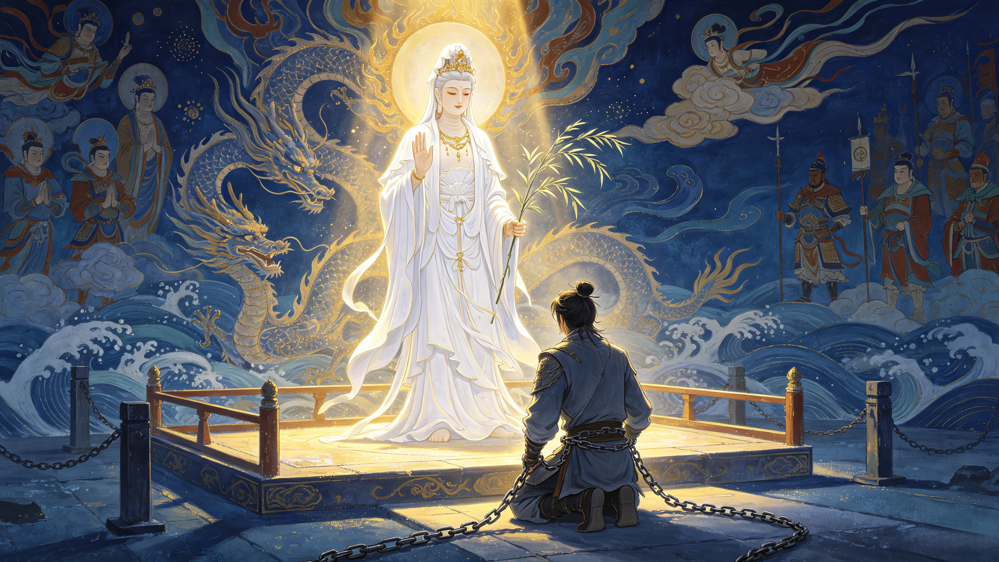

The Second Chance
He was minutes from the headsman's blade. A dragon prince condemned to die for burning a pearl. Then Guanyin walked past. What followed is Chinese mythology's most profound exploration of mercy — how a death sentence became a path to enlightenment, and how losing everything was the beginning of gaining everything.
To understand Ao Lie's redemption, you must first understand the nature of celestial justice. The Jade Emperor's law is absolute and impersonal. It does not weigh intent against outcome. It does not consider whether a crime was accidental or deliberate. The law is the law: whoever destroys a celestial treasure forfeits their life. Ao Run — Ao Lie's own father — was the one who brought the charges. Not out of cruelty, but because the Dragon King of the Western Sea had no choice. Heaven's law demanded it. A father was legally required to condemn his son to death.
The cosmic dilemma: If celestial law is absolute, there can be no redemption — only punishment. If the Jade Emperor pardoned Ao Lie simply because he felt sorry for him, the law would lose its meaning. The solution — Guanyin's intervention — solved this dilemma by transforming the form of punishment without erasing it. The dragon would still lose his freedom, his body, his voice. But he would live. And in living, he would serve a greater purpose.
Guanyin, the Bodhisattva of Compassion, occupies a unique position in the celestial hierarchy. Unlike the Jade Emperor — who governs through law — Guanyin operates through compassionate intervention. Her role is not to replace justice but to find the space within justice where mercy can breathe. When she passed the Dragon-Slaying Platform and saw the young prince bound and weeping, she did not challenge the sentence. She repurposed it.
Her argument to the Jade Emperor was elegant in its pragmatism: the dragon's death would achieve nothing. But his life — transformed, humbled, given entirely to service — could serve the most important mission in the universe. The retrieval of the Buddha's scriptures. A mission that required a being of dragon blood, supernatural endurance, and absolute silence. Ao Lie was the only candidate.
This is a distinctly Buddhist idea of redemption. Not forgiveness in the Western sense — where the crime is erased. But transformation through service — where the crime becomes the foundation for something greater. The burning of the pearl, which seemed like the end of Ao Lie's story, was actually its beginning.
The White Dragon Horse's redemption arc is distinct from every other pilgrim's. Understanding these differences reveals why his story is, in many ways, the most moving:
The Monkey King was punished for active rebellion — a deliberate declaration of war against heaven. His redemption came through external control (the golden headband) and violent service (fighting demons). Wukong's arc is about taming the ego.
Marshal Canopy was banished for lust — a conscious moral failing. His redemption is incomplete — he remains partially flawed, his appetites never fully conquered. Bajie's arc is about the limits of redemption.
The Curtain-Raising General broke a crystal dish — a moment of carelessness. His punishment was brutal (800 lashes, banishment to a river of sand), but his sin was the least intentional. Sha Wujing's arc is about quiet restoration.
His crime was an accident. His punishment — total erasure of identity — was the most extreme relative to intent. And his redemption was the most complete: from death row to Naga Prince, a rank that outshone even his original station as a dragon prince of the Western Sea.
The White Dragon Horse's path to redemption was unique: he did not earn it through battle or prayer. He earned it by carrying someone else. Every step of the 108,000-li journey was an act of penance. Every day he remained silent was an acknowledgment that his former identity — Ao Lie, the dragon prince — was gone. For fourteen years he did not speak, did not fight, did not assert his existence in any way except by being useful.
This is a radical concept, even within Buddhism. The typical path to enlightenment involves meditation, scripture study, moral discipline. Ao Lie's path was simpler — and harder. It was the path of complete self-abnegation in service to others. He did not seek to become enlightened. He sought to be useful. And in that total surrender of ego, he found the highest form of enlightenment: Naga Prince of the Eight Dragon Classes.
At the journey's end, when the Buddha distributed titles and honors at Thunderclap Monastery, Ao Lie received his elevation with the same silence he had maintained for fourteen years. The Buddha declared:
From the Buddha's pronouncement: "White Dragon Horse, you are the son of Ao Run, the Dragon King of the Western Sea. You violated your father's law by burning the imperial pearl and were sentenced to death. But you have carried the holy monk on your back throughout this journey, climbing mountains and fording rivers without complaint. For this, I elevate you to the rank of Naga Prince among the Eight Classes of Dragon Deities."
The Naga (龍) are among the highest classes of celestial beings in Buddhist cosmology — dragon-spirits who guard the Dharma and serve as protectors of the faith. To be named a Naga Prince was to be elevated above the very Dragon Kings who had condemned Ao Lie to death. The son who had shamed the Dragon King of the Western Sea had become a being even his father must now bow to.
The White Dragon Horse's story contains a lesson that transcends mythology: the worst thing that ever happened to you might be the beginning of the best thing you ever become. If Ao Lie had not burned the pearl, he would have lived a comfortable life as a dragon prince of the Western Sea — respected, certainly, but unremarkable. It was the burning — and everything that followed: the death sentence, the execution ground, Guanyin's mercy, the transformation, the fourteen years of silence — that made him a being the Buddha himself would honor.
In the cosmology of Journey to the West, nothing is wasted. Every fall contains the seed of a greater rising. For Ao Lie, the accident that destroyed his life as a dragon prince was the very thing that made possible his elevation to Naga Prince. The fire that burned the pearl lit the path to enlightenment.
Celestial law in Chinese mythology is absolute and impersonal. If the Jade Emperor pardoned every criminal who felt remorse, the entire legal order of the cosmos would collapse. Guanyin's solution — transforming the punishment rather than erasing it — preserved the law's integrity while allowing mercy to operate within it.
His crime was accidental — the least intentional of all the pilgrims' sins — yet his punishment (total erasure of identity) was among the most extreme. His redemption was not earned through battle or study but through silent, daily service. And his final elevation — to Naga Prince — was higher than any rank he had held before.
Naga (龍) are celestial dragon-spirits who guard the Dharma and protect Buddhist teachings. They rank among the Eight Classes of Dragon Deities, a position of immense spiritual prestige. A Naga Prince is a protector of the faith — a being who has transcended worldly rank to serve cosmic purpose.
Journey to the West does not describe Ao Lie's life after the pilgrimage in detail. But as a Naga Prince — a rank higher than even the Dragon Kings — he would have outranked his father Ao Run. The son who was condemned to death by his own family had become a being they must now venerate.
That the worst thing that happens to you may be the seed of your greatest transformation. Ao Lie's accidental crime led to a chain of events that elevated him far beyond what his life as a dragon prince could ever have achieved. Loss can be the beginning of a journey whose destination is higher than the starting point.
Dive Deeper